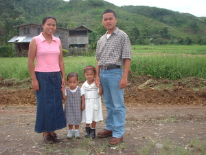

anak 
/ʔanak/
n.
“child”
1.
n.
an offspring of a person or animal
Anak ni Pebuwalan si Usmin.
Osmin is the child of Pabuwalan.
Wrd.Gloss: child; children; son; daughter
Eng. offspring; child; son; daughter
Tag. anák
Ceb. anak
Ilo.: anák
Tigwanon: ʔanak
WBM: ʔanak
Ilianen: ʔanak
Dibabawon: ʔanak
Cotabato Manobo: ʔanak
Tasaday: ʔanak
Sarangani: ʔanak 'niece or nephew'
Proto: ʔanak
OCM: Kinship Terminology (601)
DDP: Child (2.6.4.2)
Online dict status: -
Usage level: B
2.
v.
for a woman (eg-anak, mig-anak/in-anak, agent, eg><ø-) to bear a child; (to conceive or be pregnant )
Hendue te mahaan e eg-anak si Bikung su amane e ne dakel ka getek din.
It seems that Bikung is about to give birth because her tummy is already big.
Eng. bear children; give birth; conceive a child; pregnant
Tag. manganák
Ceb. manganak
Ilo.: aganák
OCM: Childbirth (844)
Idiom: panganey ne anak
—eldest child
DDP: Birth (2.6.3), Child (2.6.4.2)
Online dict status: -
Usage level: F
v.
for a man (egpaanak, migpaanak/impaanak, egpepaanak, migpepaanak/impepaanak, agent, eg><ø-pA-, eg><ø-pA-rdpCV-) to cause a woman to become pregnant
Eng. cause, to
DDP: Pregnancy (2.6.3.1)
Online dict status: -
Usage level: M
v.
for unmarried woman (egpaanakan, migpaanakan/impaanakan, agent, eg><ø-pA-) to be pregant without being married
Eng. pregant
Online dict status: -
Usage level: M
v.
for a woman (egpakaanak, nakaanak, agent, egpAkA-) to able to become pregnant
Eng. pregnant, able to; conceive, able to
Online dict status: -
Usage level: M
v.
for a midwife (egpaanak, migpaanak/impaanak, agent, eg><ø-pA-) to assist giving birth
Eng. assist, to
DDP: Pregnancy (2.6.3.1)
Online dict status: -
Usage level: M
3.
n.
(mengeanak, menge-) nephew; niece
Eng. nephew; niece
Online dict status: -
Usage level: B
4.
n.
(talaanak, tala-) one parent and at least one of their children
Mig-amin-amin ka talaanak miggendiyè te siyudad gabii te maselem.
All family went to a city yesterday morning.
Eng. family
Online dict status: -
Usage level: M
5.
n.
(taltalaanak, tala-rdpCVC-) family
Eng. family; relatives
Online dict status: -
Usage level: M
n.
(anaken, -en) nephew; niece
Me matumpis ka me anaken ku su mig-iling te amey ran.
My nephews are generous because they are like their father.
Eng. nephew; niece
Tag. pamangkín
Ceb. pag-umangkun
Ilo.: kaánakan
OCM: Kinship Terminology (601)
Online dict status: -
Usage level: B
6.
n.
(aanakan, rdpCV–an) the womb
Kenad e eg-anak si Ilma su nareetan e ka aanakan din.
Ilma is no longer conceived because her womb is already damage.
Eng. womb
Online dict status: -
Usage level: M
7.
v.
for plants (egpanganak, migpanganak/impanganak, agent, eg><ø-paN-) to reproduce new growth
Eng. reproduce, to
Online dict status: -
Usage level: M
8.
v.
for rice plants (egpanganak, migpanganak/impanganak, agent, eg><ø-paN-) to still bearing empty seeds
Eng. bear, to (empty seeds)
Online dict status: -
Usage level: M
9.
v.
for someone (egpanganak, migpanganak/impanganak, agent, eg><ø-paN-) to separate the outside and inside part of a bamboo
Eng. separate, to
Online dict status: -
Usage level: M
10.
n.
(anak-anak, rdpRT-) baby toy
Eng. baby toy; toy
Online dict status: -
Usage level: M
11.
v.
for money (egpaanakan, migpaanakan/impaanakan, theme, eg><ø-pA-) to bear interest
Eng. interest
Online dict status: -
Usage level: R
Updated by: RJH,JLM,RJH,AAA,RUL,QDL,NJK,QDL,QDL,NJK,NJK,RJH
Last updated: 14/Dec/2015
"anak" in reader "Ka ngaran te me anak"
"anak" in reader "Ka ngaran te me anak"
"anak" in reader "Ka ngaran te me anak"
"anak" in reader "Ka ngaran te me anak"
"anak" in reader "Ka ngaran te me anak"
"anak" in text "Examples of Anit"
"anak" in text "Where I Went to School"
"anak" in text "Prophecy About Future"
"anak" in text "A Barrio Captain Introduces Himself (Egpataha te Ngaran)"
"anak" in text "Death of a Young Man"
"anak" in text "A Father Tells His Children about School"
"anak" in text "Morning Darkness"
"anak" in text "Aurelio's Marriage"
"anak" in text "Senge lunggunan ne due me anak"
"anak" in text "Senge lunggunan ne due me anak"
"anak" in text "Senge lunggunan ne due me anak"
"anak" in text "Senge lunggunan ne due me anak"
"anak" in text "Te senge kaapunan, egpanumbaley si Pidru diye te senge baley"
"anak" in text "Te senge kaapunan, egpanumbaley si Pidru diye te senge baley"
"anak" in text "Te senge kaapunan, egpanumbaley si Pidru diye te senge baley"
"anak" in healthbook "Nekey-a ka kahew?"
"anak" in healthbook "Migpamawian ni Inuk ka sumbaley rin ne migpangaliskis"
"anak" in healthbook "Mania teg pakapatey kag iindes?"
"anak" in healthbook "Mania teg pakapatey kag iindes?"
"anak" in healthbook "Keilangan ka meupiya neg kakeen"
"peg-anak" in song "Panugtuli a ki Hisus"
"Anak" in song "Mateles si Hisus"
"Anak" in song "Manama ne matulus"
This page last updated: 28-Dec-2019
Copyright © 2009-2014, Matigsalug Language Christian Association, Inc